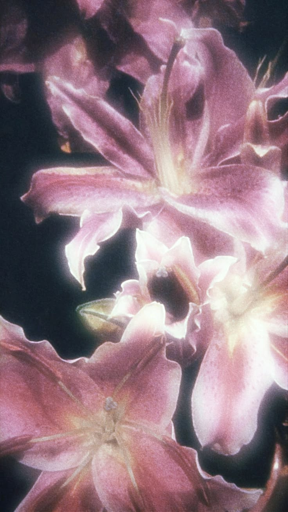
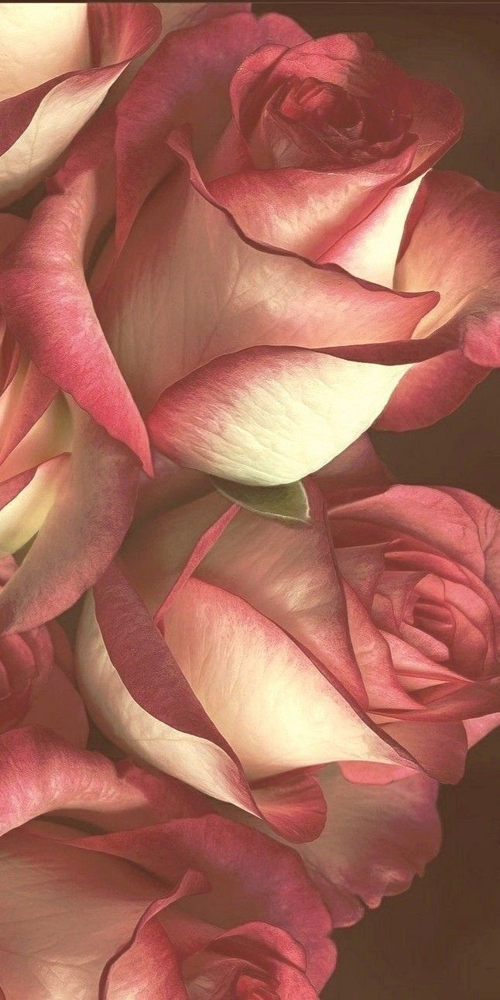
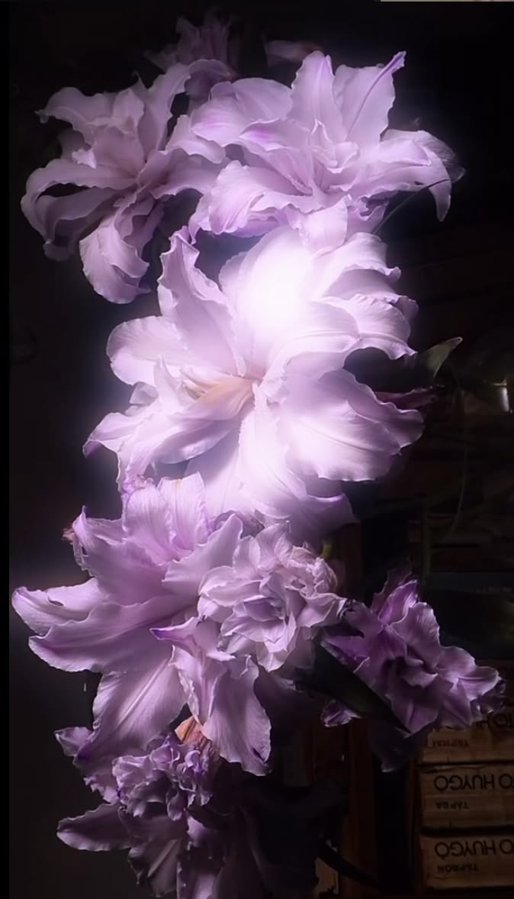
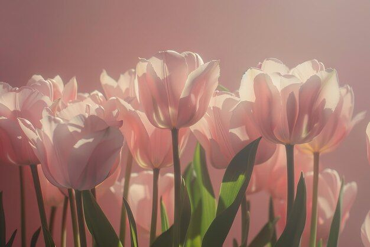
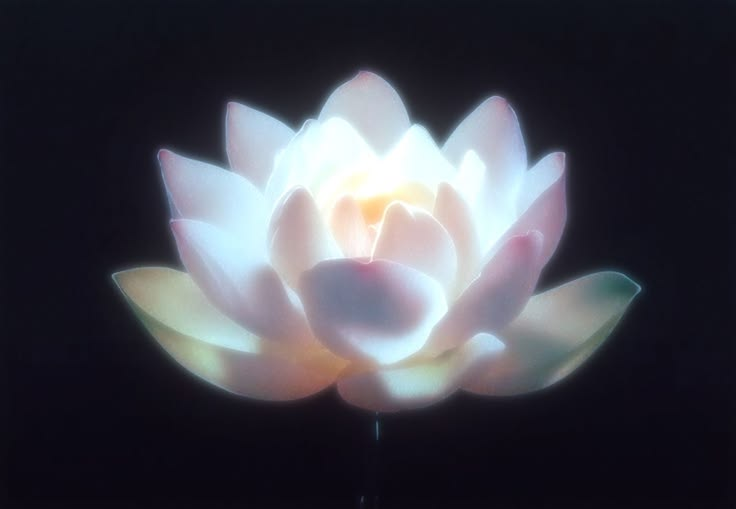

hii this webOS is about da flowers i lav hehe.


Roses are just the most dramatic little things — they show up in every shade imaginable, from the deepest red to the softest blush pink, like they personally decided to be the main character of every garden. Their petals are so soft and layered, like tiny velvet spirals that took their sweet time being perfect. Even their thorns are kind of cute in a "don't touch me i'm delicate" way. They smell like what happiness would smell like if it were a flower. Honestly roses are just built different

Violets are the most precious little underrated babies in the entire flower world — they're tiny and humble and just quietly sitting there being absolutely stunning without making a big deal about it. Their purple is that specific shade of purple, the kind that looks like it was handpicked by a fairy or something. They grow super close to the ground like they're just shy little things peeking out from the grass going "hi... notice me maybe?" And the fact that there's literally a whole color named after them?? they earned that so hard. Soft, delicate, sweet-smelling and a little mysterious — violets are the quiet girl of the flower world and honestly that's so endearing!

Tulips are just the cutest little cup-shaped sweethearts — like someone looked at a flower and said "what if it was also a tiny bowl of joy" and just made it happen. They come in literally every color imaginable and they're so clean and smooth, no fuss, no extra petals, just a perfect simple shape that somehow manages to look both elegant and adorable at the same time. They pop up in spring like they've been waiting underground all winter just to surprise you and honestly that's the most wholesome thing ever. They stand up so tall and straight too like proud little soldiers of cuteness. A whole field of tulips is basically nature showing off and honestly?? good for her✨

Okay lotus flowers are genuinely one of the most magical things to ever exist — they grow straight out of muddy murky water and somehow emerge as the most pristine, ethereal, untouched-looking blooms imaginable?? like they said "my environment will NOT define me" and just became breathtaking anyway. Their petals are so perfectly layered and symmetrical it looks like nature sat down with a ruler and took her time. They come in the softest pinks and whites and purples like they were painted by someone who was definitely in a very peaceful mood that day. And they close up at night and reopen every morning like they're doing a little daily reset which is honestly so relatable and cute. Ancient civilizations literally made them sacred symbols and honestly one look at a lotus and you completely understand why 🪷